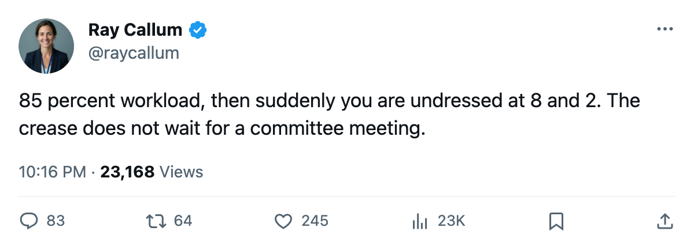
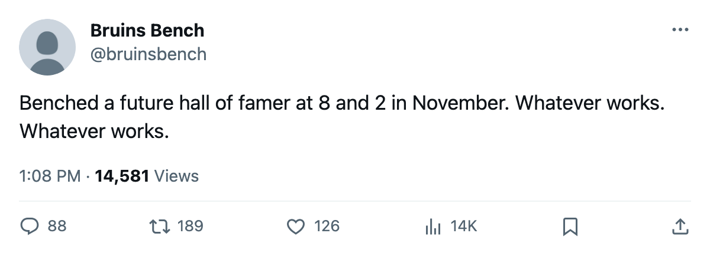

Goalie Watch: New Jersey Moves Brodeur Out at 8-2-1
Three goaltenders shuffled in one lineup change. The new starter has 1 appearance this season.
 Ray CallumSenior correspondent · Home Ice Network
Ray CallumSenior correspondent · Home Ice Network
Martin  Brodeur93 was scratched from the
Brodeur93 was scratched from the  New Jersey Devils lineup this week, and
New Jersey Devils lineup this week, and  Leighton78 starts tonight at
Leighton78 starts tonight at  Montreal Canadiens.
Montreal Canadiens.
The Devils are 8-2-1 through 13 games with 21 points. Their 28 goals against lead the East. Brodeur started 11 of the first 13, an 85% workload. No IL entry with a named body part or a return date. The lineup sheet has him undressed.
Leighton moves from backup to starter with 1 game played this season.  Passmore73 takes the backup slot after 0 appearances.
Passmore73 takes the backup slot after 0 appearances.
 Pittsburgh Penguins sits on the same edge.
Pittsburgh Penguins sits on the same edge.  Hedberg89 has started 14 of 15 games, a 93% share. This desk picked Pittsburgh to score at least 2 goals at
Hedberg89 has started 14 of 15 games, a 93% share. This desk picked Pittsburgh to score at least 2 goals at  Minnesota Wild last Saturday and watched that prediction die in a 4-0 shutout, breaking a streak of 7.
Minnesota Wild last Saturday and watched that prediction die in a 4-0 shutout, breaking a streak of 7.
Brodeur's 85% share puts New Jersey Devils in the same zone. The Devils have won 8 of their last 10 and their road record reads 5-0, the only undefeated road split in either conference.
First meeting in the Northeast
Montreal Canadiens and New Jersey Devils have not played this season. Montreal sits at 4-6-3 with 15 points and a 5-5 home record. The Canadiens won 4-3 over  Dallas Stars in overtime on 2005-11-12 before losing 5-2 to
Dallas Stars in overtime on 2005-11-12 before losing 5-2 to  Boston Bruins two nights later.
Boston Bruins two nights later.
 Theodore87 has started 12 of 15 for Montreal, an 80% share.
Theodore87 has started 12 of 15 for Montreal, an 80% share.  Roloson82 has played 3. The New Jersey Devils crease reset gives Leighton his first start of the season, and the road is where it starts. Five wins, no losses, on the highway.
Roloson82 has played 3. The New Jersey Devils crease reset gives Leighton his first start of the season, and the road is where it starts. Five wins, no losses, on the highway.

